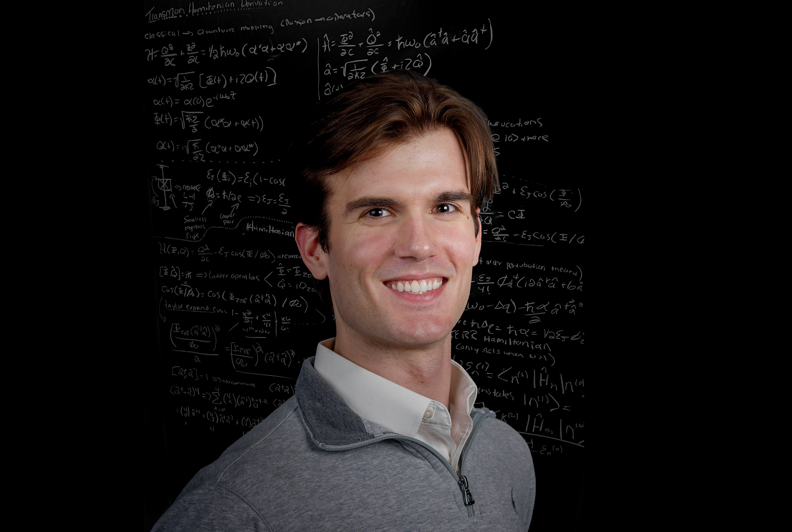

October 2, 2025
International Astronautical Congress 2025
Space-based Optical and Quantum Communications Symposium
International Convention Centre Sydney, Australia
Event Website →
Undergraduate Student
University of Massachusetts Amherst
Connor Casey is a senior at the University of Massachusetts Amherst pursuing a multidisciplinary curriculum in physics, computer science, electrical engineering, mathematics, philosophy, and finance. On the experimental side he works with Professor Chen Wang in the Superconducting Quantum Information Lab on autonomous bosonic quantum error correction. On the theory side he works with Professor Don Towsley in the ACQuIRe Lab within the NSF Center for Quantum Networks on modeling quantum repeater architectures and quantum error correction for satellite links.
University of Massachusetts Amherst
University of Massachusetts Amherst
University of Massachusetts Amherst
Space-based Optical and Quantum Communications Symposium
International Convention Centre Sydney, Australia
Event Website →Poster Session
Albuquerque Convention Center, New Mexico, USA
Quantum memories are essential components in applications ranging from quantum computing to quantum communication networks. However, their practical utility is constrained by short decoherence times, motivating the search for new physical systems that can inherently protect stored information. Discrete time crystals (DTCs)—periodically driven many-body systems exhibiting stable subharmonic oscillations that break discrete time-translation symmetry—offer a promising approach, as they are theoretically able to shield encoded information from local perturbations, making them compelling candidates for next-generation, passively protected quantum memories.
Event Website →International Astronautical Congress 2025 (IAC '25)
Quantum networking seeks to enable global entanglement distribution through terrestrial and free space channels; however, the exponential loss in these channels necessitates quantum repeaters with efficient, long lived quantum memories (QMs)...
IEEE International Conference on Quantum Computing and Engineering 2025 (QCE '25)
Quantum memories are essential components in applications ranging from quantum computing to quantum communication networks. However, their practical utility is constrained by short decoherence times, motivating the search for new physical systems that can inherently protect stored information...
International Astronautical Congress 2024 (IAC '24)
This study discusses the current state of FSO technology, as well as global trends and developments in the industrial ecosystem to identify obstacles to the full realization of optical space-to-ground communication networks...
Our tensor-network time-crystal research is headed to Albuquerque! Our paper, Time Crystals for Quantum Memories: A Tensor-Network Approach, has been accepted for presentation at IEEE Quantum Week — QCE 2025 in New Mexico. Catch us in the Quantum Technologies & Systems Engineering track!
I've officially joined the Wang Lab—home of the Schrödinger-cat qubit—where I'll be diving deep into superconducting-circuit devices for quantum information processing, including reservoir engineering, bosonic error-correction codes, and tunable band-pass filters.
Our multi-mode quantum-memory concept for satellite quantum networks is headed to the 76th IAC in Sydney! Our paper, Multi-Mode Quantum Memory Architecture for High-Throughput Satellite-Based Quantum Networks, has been accepted for presentation in the Space-based Optical and Quantum Communications session.
Our team's research on optimizing optical ground-station networks for LEO constellations has been accepted to the 75th International Astronautical Congress in Milan. Our paper, Advancing Free-Space Optical Communication System Architecture: Performance Analysis of Varied Optical Ground-Station Network Configurations, will be presented in the Space Communications and Navigation Global Technical Session.